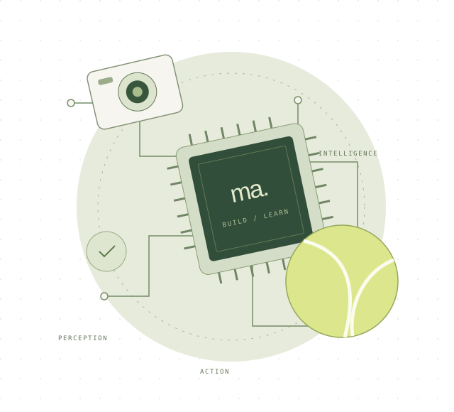

1
Intelligent systems
Making sense of images, language, and multimodal data; and understanding the evidence behind a model’s answer.
Python · PyTorch · Computer vision
Computer engineering · UIUC
Hi, I’m Mohammed Alnasser. I build at the intersection of intelligent software and the physical world.

1 / A little context
The person behind the projectsI like understanding how things work.
I like making them work even more.
I’m pursuing a B.S. in Computer Engineering at UIUC, with an expected graduation in May 2027. My interests bring together computer architecture, applied machine learning, and robotics.
From research at KAUST (King Abdullah University of Science and Technology) to FPGA labs and systems programming, I enjoy projects that let me move between software and hardware, and learn something new along the way.
Making sense of images, language, and multimodal data; and understanding the evidence behind a model’s answer.
Python · PyTorch · Computer vision
Working with digital logic, microcontrollers, and operating systems to connect an idea to a running system.
C · Verilog · STM32 · RISC-V
Exploring how perception, control, and a physical mechanism can turn a useful idea into a robot.
Robotics · Sensors · Integration
2 / Selected work
A few things I’ve been working onResearch, systems, and a little time on the tennis court.
Project 1 of 3: Explainable interview evaluation
3 / In the lab
The most interesting part is where the idea meets reality.
On the workbench
Collecting tennis balls is a simple task with an interesting engineering challenge behind it. How does a robot find a ball, approach it, and get it into a collection area?
This concept animation sketches that loop. The project brings together the parts I enjoy: perception, embedded control, and mechanical design.
Explore the robot project4 / Say hello
Always interested in a good engineering conversationWhether it’s intelligent systems, embedded hardware, or an interesting problem to work through, I’d be happy to connect.
Let’s talk ma138@illinois.edu